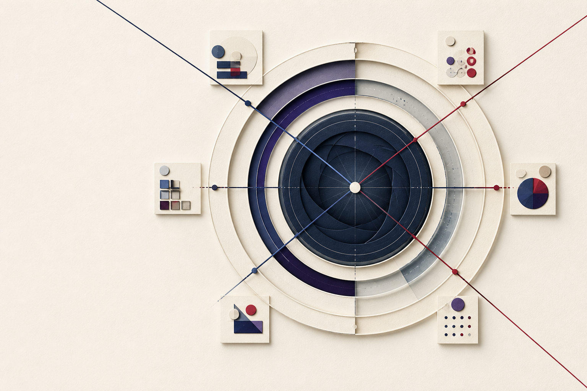

网上常见的承诺
“AI 可以帮你
构建个人知识引擎。”
工具、Prompt、RSS、Agent、数据库都在这里。但它们往往从技术零件开始，默认你已经知道自己要建立什么。
先把断层说清楚
互联网正在把 AI 讲得越来越强，却很少有人替非 AI 专业的人回答：我的行业到底要盯什么，谁最早知道，哪些来源值得长期信任？
网上常见的承诺
工具、Prompt、RSS、Agent、数据库都在这里。但它们往往从技术零件开始，默认你已经知道自己要建立什么。
真正的使用现场
文旅、制造、教育、农业、医疗、能源和城市建设的从业者需要长期关注，却不知道如何把专业问题交给 AI。
私人情报所补上的，是“会用的人”和“需要的人”之间的那条路。不把你变成工程师，而是先从你的专业问题开始。
同一套方法，进入不同的工作现场
下面只是四个入口。你的行业不在列表里，也可以从一句现实问题开始。
是否投入新的县域文旅线路？
这不是“市场已经验证”的结论，但说明竞品正在争夺同一客群，应优先补查客单价、复购和淡季承载能力。
从一个问题，到一个可持续系统
你的专业问题，才是这套系统的起点。AI 只是把这条路径持续跑起来。
看见信号如何汇聚
不是所有信息都要进入日报。每一次观察都要回到你的判断，并留下来源、时间和缺口。

先写下你要做的决定，而不是先列关键词。
Decision Context · PIR把大问题拆成有限、可检查的信息要素。
Essential Information Elements重建专家、组织、资料和主题之间的注意力网络。
Expert Attention Reconstruction回到当时的时间截点，检验来源是否真的帮过你。
Point-in-time Source Benchmark把官方、解释、前沿、广覆盖和社区角色组合起来。
Source Portfolio显示已知、待确认和仍然不知道的地方。
Coverage Audit最后才是日报、推送和下一轮反馈。
Domain-ranked Daily BriefCoverage 的分母不是“搜到多少网页”，而是你声明过、必须长期掌握的要素。
日报只是最后一页
一份好的私人情报简报，不会用“今天有 37 条行业新闻”制造忙碌感。它应该回答：发生了什么，为什么现在出现，证据来自哪里，还需要补查什么。